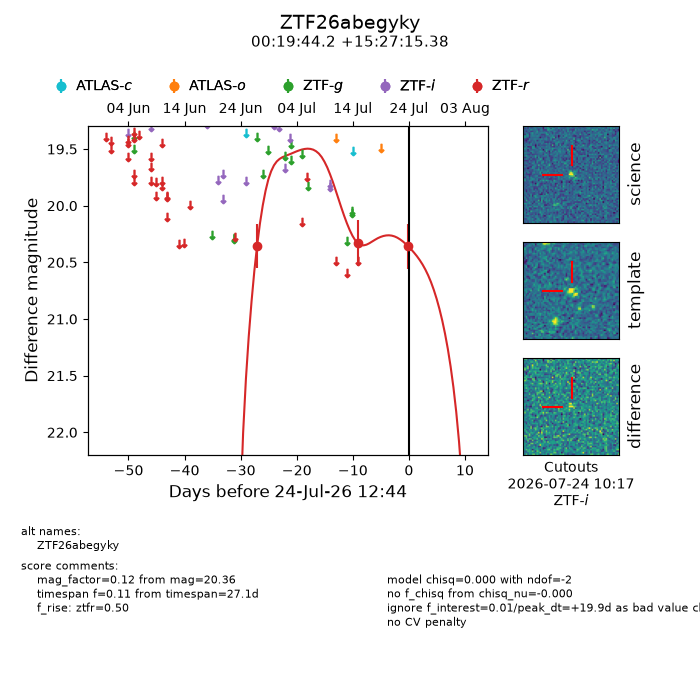
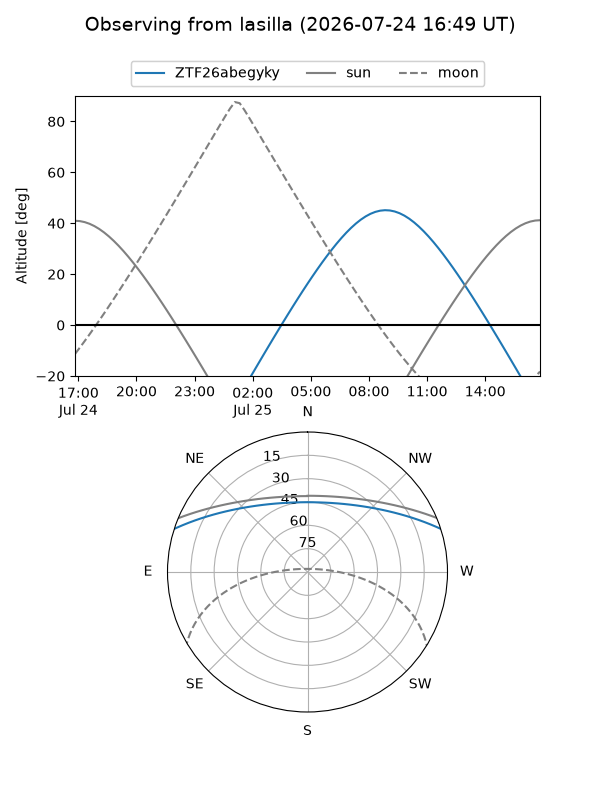
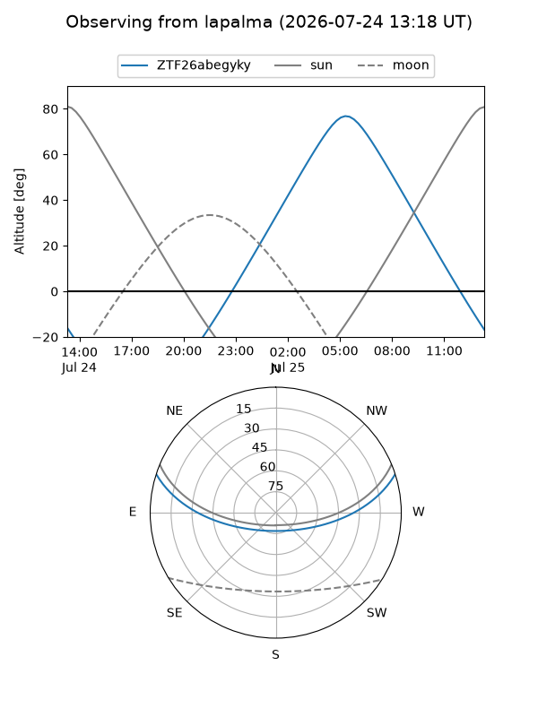
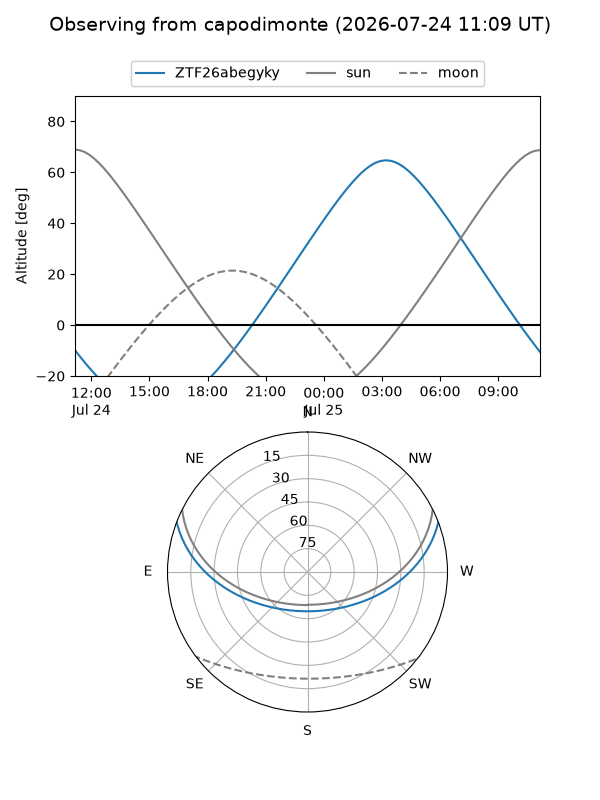
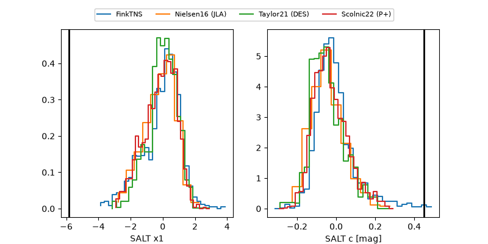

ZTF26abegyky
Target ZTF26abegyky at 2026-07-24 12:46
Aliases and brokers:
FINK-ZTF: ztf.fink-portal.org/ZTF26abegyky
Lasair-ZTF: lasair-ztf.lsst.ac.uk/objects/ZTF26abegyky
ALeRCE-ZTF: alerce.online/object/ZTF26abegyky
Direct TNS query: direct search
alt names
ZTF26abegyky (ztf,fink_ztf)
Coordinates:
equatorial (ra, dec) = 4.9341,+15.45427
equatorial (HMS+DMS) = 00:19:44.18,+15:27:15.38
galactic (l, b) = (111.7525,-46.72819)
Flags:
peak dt: +19.9
Photometry:
last ztfr=20.36
3 ztfr detections
Lightcurve

Visibility



Additional plots
